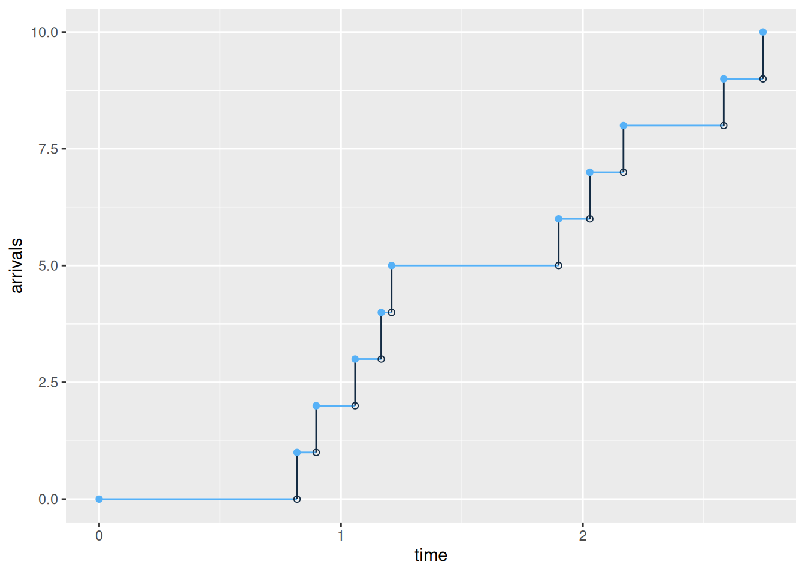

Module 15 Fitting probability distributions
Fitting distributions to data is a very common task in statistics and consists in choosing a probability distribution modelling the random variable, as well as finding parameter estimates for that distribution. This requires judgment and expertise and generally needs an iterative process of distribution choice, parameter estimation, and quality of fit assessment. In this module we will limit us to univariate data, i.e. univariate distributions such as normal, uniform, Poisson and exponential distributions. We will use the fitdistrplus package for fitting distributions.
A template project for this module is given on Posit Cloud (open it and use it while reading the notes).
15.1 Learning outcomes
By the end of this module, you are expected to:
- Have knowledge about different univariate distributions.
- Identify continuous and discrete data.
- Fit different distributions to data.
The learning outcomes relate to the overall learning goals number 7 and 11-14 of the course.
15.2 Introduction
Fitting distributions to data is a very common task in statistics and consists in choosing a probability distribution modelling the random variable, as well as finding parameter estimates for that distribution. This requires judgment and expertise and generally needs an iterative process of distribution choice, parameter estimation, and quality of fit assessment. In this module we will limit us to univariate data, i.e. univariate distributions such as a normal, uniform, Poisson and exponential distribution.
Consider a dataset \(x = (x_1, \ldots, x_n)\) with \(n\) observations which is assumed to be sample observations of a random variable \(X\). Our goal is to find a distribution that fit the data well and estimate the parameters of the distribution. For instance if the distribution is a normal distribution then the mean and variance should be estimated.
Finding the distribution is an iterative process by considering distribution choice, parameter estimation, and quality of fit assessment repeatedly until you are satisfied. The first step is to decide if you data is should fit a discrete or continuous distribution. That is, should the random variable always take discrete values or could/are continuous values possible/okay? Note even though your sample only contain discrete values it is not necessarily samples from a discrete distribution. Consider for instance the dataset groundbeef which contains values of serving sizes in grams of ground beef patties consumed by children under 5 years old:
library(fitdistrplus)
library(tidyverse)
data("groundbeef") # activate the dataset
dat <- as_tibble(groundbeef)
str(dat)
#> tibble [254 × 1] (S3: tbl_df/tbl/data.frame)
#> $ serving: num [1:254] 30 10 20 24 20 24 40 20 50 30 ...Serving size in grams is only given using integers; however it is obvious that a continuous distribution should be fitted. We select the serving column so dat becomes a vector with the observations.
dat <- dat$serving15.3 Fitting distributions to continuous data
Before fitting one or more distributions to a data set, it is generally necessary to choose good
candidates among a predefined set of distributions. This choice may be guided by the knowledge of
stochastic processes governing the modeled variable, or, in the absence of knowledge regarding the
underlying process, by the observation of its empirical distribution. We will use the
fitdistrplus package for fitting distributions. Let
us continue with the groundbeef dataset.
First of all, it is common to start with plots of the empirical distribution function and the
histogram (or density plot), which can be obtained with the plotdist function which provides two
plots where the left-hand plot is by default the histogram on a density scale and the
right-hand plot the empirical cumulative distribution function (CDF).
plotdist(dat, histo = TRUE, demp = TRUE)
Figure 15.1: Empirical density and distribution.
The empirical plots of the density and the CDF may give you a hit about the distribution of \(X\). But often additional descriptive statistics may help to choose candidates to describe a distribution among a set of parametric distributions. Especially the skewness and kurtosis, linked to the third and fourth moments, are useful for this purpose. A non-zero skewness reveals a lack of symmetry of the empirical distribution, while the kurtosis value quantifies the weight of tails in comparison to the normal distribution for which the kurtosis equals 3.
The skewness and kurtosis and their corresponding estimate are given by \[\begin{equation} \label{skewness} sk(X) = \frac{E[(X-E(X))^3]}{Var(X)^{\frac{3}{2}}}~,~ \widehat{sk}=\frac{\sqrt{n(n-1)}}{n-2}\times\frac{m_{3}}{m_{2}^{\frac{3}{2}}}, \end{equation}\]
\[\begin{equation} \label{kurtosis} kr(X) = \frac{E[(X-E(X))^4]}{Var(X)^{2}}~,~ \widehat{kr}=\frac{n-1}{(n-2)(n-3)}((n+1) \times \frac{m_{4}}{m_{2}^{2}}-3(n-1)) + 3, \end{equation}\] where \(m_{2}\), \(m_{3}\), \(m_{4}\) denote empirical moments defined by \(m_{k}=\frac{1}{n}\sum_{i=1}^n(x_{i}-\overline{x})^{k}\), with mean value \(\overline{x}\).
The descdist function provides classical descriptive statistics (minimum, maximum, median, mean,
standard deviation), skewness and kurtosis. A skewness-kurtosis plot such as the one proposed by
Cullen and Frey (1999) is provided by the descdist function for the empirical distribution On this plot, values
for common distributions are displayed in order to help the choice of distributions to fit to
data. For some distributions (normal, uniform, logistic, exponential), there is only one possible
value for the skewness and the kurtosis. Thus, the distribution is represented by a single point
on the plot. For other distributions, areas of possible values are represented, consisting of
lines (as for gamma and lognormal distributions), or areas (as for beta distribution).
Nevertheless, the user needs to know that skewness and kurtosis, like all higher moments, have a
very high variance. Hence the skewness-kurtosis plot should then be regarded as indicative only
and the properties of the random variable should be considered, notably its expected value and its
range, as a complement to the use of the plotdist and descdist functions.
Below is a call to the descdist function to describe the distribution of the serving size from the
groundbeef data set and to draw the corresponding skewness-kurtosis plot. Looking at the results
notice that the observed skewness is positive and the kurtosis is not far from 3. Hence the fit of
three common right-skewed distributions could be considered: Weibull, gamma and lognormal
distributions.
descdist(dat)
#> summary statistics
#> ------
#> min: 10 max: 200
#> median: 79
#> mean: 73.6
#> estimated sd: 35.9
#> estimated skewness: 0.735
#> estimated kurtosis: 3.55
Figure 15.2: Skewness-kurtosis plot for a continuous variable (groundbeef).
Once one or more parametric distributions have been selected they are fitted to the data set using maximum likelihood. This is done using the fitdist function:
fitW <- fitdist(dat, distr = "weibull")
fitG <- fitdist(dat, distr = "gamma")
fitL <- fitdist(dat, distr = "lnorm")The function returns a list with information about the fit such as the parameter estimates, the loglikelihood, the Akaike and Bayesian information criteria (the so-called AIC and BIC). An overview can be seen using the summary function:
summary(fitW)
#> Fitting of the distribution ' weibull ' by maximum likelihood
#> Parameters :
#> estimate Std. Error
#> shape 2.19 0.105
#> scale 83.35 2.527
#> Loglikelihood: -1255 AIC: 2514 BIC: 2522
#> Correlation matrix:
#> shape scale
#> shape 1.000 0.322
#> scale 0.322 1.000
summary(fitG)
#> Fitting of the distribution ' gamma ' by maximum likelihood
#> Parameters :
#> estimate Std. Error
#> shape 4.0083 0.34134
#> rate 0.0544 0.00494
#> Loglikelihood: -1254 AIC: 2511 BIC: 2518
#> Correlation matrix:
#> shape rate
#> shape 1.000 0.938
#> rate 0.938 1.000
summary(fitL)
#> Fitting of the distribution ' lnorm ' by maximum likelihood
#> Parameters :
#> estimate Std. Error
#> meanlog 4.169 0.0337
#> sdlog 0.537 0.0238
#> Loglikelihood: -1261 AIC: 2527 BIC: 2534
#> Correlation matrix:
#> meanlog sdlog
#> meanlog 1 0
#> sdlog 0 1The fit to the data can be plotted using four classical goodness-of-fit plots (Cullen and Frey 1999):
- a density plot representing the density function of the fitted distribution along with the histogram of the empirical distribution,
- a CDF plot of both the empirical distribution and the fitted distribution,
- a Q-Q plot representing the empirical quantiles (y-axis) against the theoretical quantiles (x-axis),
- a P-P plot representing the empirical distribution function evaluated at each data point (y-axis) against the fitted distribution function (x-axis).
par(mfrow = c(2, 2)) # 4 plots in one figure
pLegend <- c("Weibull", "lognormal", "gamma")
lst <- list(fitW, fitL, fitG)
denscomp(lst, legendtext = pLegend)
qqcomp(lst, legendtext = pLegend)
cdfcomp(lst, legendtext = pLegend)
ppcomp(lst, legendtext = pLegend)
Figure 15.3: Four Goodness-of-fit plots for various distributions fitted to the serving size data.
The density plot and the CDF plot may be considered as the basic classical goodness-of-fit plots. The two other plots are complementary and can be very informative in some cases. The Q-Q plot emphasizes the lack-of-fit at the distribution tails while the P-P plot emphasizes the lack-of-fit at the distribution center. In the present example, none of the three fitted distributions correctly describes the center of the distribution, but the Weibull and gamma distributions could be preferred for their better description of the right tail of the empirical distribution. Moreover, these distributions also have the lowest AIC values.
Other methods can be used to fit distributions to the data instead of maximum likelihood. For details see Delignette-Muller and Dutang (2015).
15.3.1 Example: breakdown times
We consider a dataset that contains the recorded breakdown times of a machine part in days.
library(tfa) # update to latest version using remotes::install_github("bss-osca/tfa-package", upgrade = FALSE)
dat <- breakdown
plotdist(dat, histo = TRUE, demp = TRUE)
Since breakdown times may be seen as a continuous variable we try to fit a continuous variable. First we try to find distribution candidates:
descdist(dat)
#> summary statistics
#> ------
#> min: 91 max: 280
#> median: 182
#> mean: 183
#> estimated sd: 30.7
#> estimated skewness: 0.0503
#> estimated kurtosis: 3.32
The observation is close to the normal and lognormal values and we try to fit these two distributions:
fitN <- fitdist(dat, distr = "norm")
fitL <- fitdist(dat, distr = "lnorm")
summary(fitN)
#> Fitting of the distribution ' norm ' by maximum likelihood
#> Parameters :
#> estimate Std. Error
#> mean 183.2 1.99
#> sd 30.6 1.41
#> Loglikelihood: -1142 AIC: 2288 BIC: 2295
#> Correlation matrix:
#> mean sd
#> mean 1 0
#> sd 0 1
summary(fitL)
#> Fitting of the distribution ' lnorm ' by maximum likelihood
#> Parameters :
#> estimate Std. Error
#> meanlog 5.196 0.01130
#> sdlog 0.174 0.00799
#> Loglikelihood: -1148 AIC: 2300 BIC: 2306
#> Correlation matrix:
#> meanlog sdlog
#> meanlog 1 0
#> sdlog 0 1
par(mfrow = c(2, 2)) # 4 plots in one figure
pLegend <- c("normal", "lognormal")
lst <- list(fitN, fitL)
denscomp(lst, legendtext = pLegend)
qqcomp(lst, legendtext = pLegend)
cdfcomp(lst, legendtext = pLegend)
ppcomp(lst, legendtext = pLegend)
Figure 15.4: Four Goodness-of-fit plots for various distributions fitted to the breakdown data.
Note it seems that the normal distribution has a better fit (AIC smallest). Also intuitively it makes sense that breakdown times are normal distributed around a mean value (however the probability of negative values should be low).
15.4 Fitting distributions to discrete data
You may also need to fit discrete distributions such as:
The Poisson distribution which is a discrete probability distribution that expresses the probability of a given number of events occurring in a fixed interval of time and/or space if these events occur with a known average rate and independently of the time since the last event. The Poisson distribution can be applied to systems with a large number of possible events, each of which is rare. How many such events will occur during a fixed time interval? Under the right circumstances, this is a random number following a Poisson distribution.
The binomial distribution which is a probability distribution that is used to model the number of successes in a sequence of \(n\) independent experiments with probability \(p\) for success. The Bernoulli distribution is a special case of the Binomial distribution where \(n=1\) (one experiment).
The negative binomial distribution which is a discrete probability distribution that models the number of failures in a sequence of independent and identically distributed Bernoulli trials before a specified number of successes occurs.
The geometric distribution which is a special case of the negative binomial distribution where the specified number of successes are one.
15.4.1 Example: sales of lottery tickets
Consider data of the number of houses that must be visited before selling 20 lottery tickets (assuming only one is sold at a time).
dat <- lottery
plotdist(dat, discrete = TRUE)
Since the number of houses that must be visited (trials) is unknown, a negative binomial distribution seems as a good choice (with 20 successes). The fit of a discrete distribution to discrete data requires the same procedure as for continuous data.
fit <- fitdist(dat, distr = "nbinom", discrete = TRUE, fix.arg = list(size = 20))
summary(fit)
#> Fitting of the distribution ' nbinom ' by maximum likelihood
#> Parameters :
#> estimate Std. Error
#> mu 37.2 1.38
#> Fixed parameters:
#> value
#> size 20
#> Loglikelihood: -200 AIC: 402 BIC: 404
par(mfrow = c(1, 2)) # 2 plots in one figure
pLegend <- c("negative binomial")
lst <- list(fit)
denscomp(lst, legendtext = pLegend)
cdfcomp(lst, legendtext = pLegend)Figure 15.5: Four Goodness-of-fit plots for various distributions fitted to the breakdown data.
Note only the density and CDF is plotted for discrete data. Moreover, this is an example where some of the parameters of the negative binomial distribution are known in advance. The negative binomial distribution has two parameters (see ?pnbinom): the specified number of successes to occur (size argument) and the probability of success in each trial (prob argument). Given the information about the dataset, size equals 20 and we want to to try finding the probability of success in each trial. You fix a parameter by using the fix.arg argument in fitdist. Note that the summary only outputs the mean estimate mu but prob = size/(size+mu):
prob <- 20/(20 + fit$estimate)
names(prob) <- NULL
prob
#> [1] 0.35That is the probability of success when visiting each house is approx. 35% and e.g. the number of houses that must be visited before all lottery tickets are sold with 95% probability is:
qnbinom(0.95, size = 20, prob)
#> [1] 5515.5 The Poisson process
A Poisson process models a series of discrete events. The average time between events is known, but the exact timing of events is random: the waiting time between events are exponential distributed. Since the exponential distribution is memoryless, the arrival time of an event is independent of what happend in the past (e.g. the arrival time of the last event). A Poisson process is often used in queueing theory to model random events, such as the arrival of customers at a store or phone calls arriving at a call center.
More formally a Poisson process is defined as process counting the total number of events \(N(t)\) at time \(t\) given the average arrival rate \(\lambda\). The process satisfy that:
- \(N(0)=0\);
- The waiting time between events is exponential distributed with rate \(\lambda\);
- The number of arrivals in any interval of length \(\tau\) is Poisson distributed with parameter \(\tau\lambda\)
The arrivals in a Poisson process with on average 4 arrivals per time unit (\(\lambda=4\)) may look like:

Let us consider the data set demand_goods containing demand for two different goods/products:
library(tfa) # update to latest version using remotes::install_github("bss-osca/tfa-package", upgrade = FALSE)
demand_goods
#> # A tibble: 362 × 3
#> date demand product
#> <dttm> <dbl> <dbl>
#> 1 2016-01-01 00:00:00 8 1
#> 2 2016-01-06 00:00:00 10 1
#> 3 2016-01-08 00:00:00 10 1
#> 4 2016-01-11 00:00:00 7 1
#> 5 2016-01-22 00:00:00 9 1
#> 6 2016-02-01 00:00:00 8 1
#> 7 2016-02-05 00:00:00 8 1
#> 8 2016-02-06 00:00:00 7 1
#> 9 2016-02-13 00:00:00 9 1
#> 10 2016-02-14 00:00:00 8 1
#> # ℹ 352 more rowsThe arrival of demands and demand size may follow a compound Poisson process which differ from a Poisson process by allowing more than a demand of one given an arrival. That is, the inter arrival times should still follow an exponential distribution. Let us find the inter arrival times between each order and try to fit it:
library(tidyverse)
datDf <- demand_goods %>%
group_by(product) %>%
mutate(between = as.numeric(date - lag(date), units="days")) %>%
print()
#> # A tibble: 362 × 4
#> # Groups: product [2]
#> date demand product between
#> <dttm> <dbl> <dbl> <dbl>
#> 1 2016-01-01 00:00:00 8 1 NA
#> 2 2016-01-06 00:00:00 10 1 5
#> 3 2016-01-08 00:00:00 10 1 2
#> 4 2016-01-11 00:00:00 7 1 3
#> 5 2016-01-22 00:00:00 9 1 11
#> 6 2016-02-01 00:00:00 8 1 10
#> 7 2016-02-05 00:00:00 8 1 4
#> 8 2016-02-06 00:00:00 7 1 1
#> 9 2016-02-13 00:00:00 9 1 7
#> 10 2016-02-14 00:00:00 8 1 1
#> # ℹ 352 more rows
dat <- datDf %>%
filter(product == 1, !is.na(between)) %>%
pull(between)
plotdist(dat, histo = TRUE, demp = TRUE)
descdist(dat)
#> summary statistics
#> ------
#> min: 0 max: 33
#> median: 4
#> mean: 5.08
#> estimated sd: 4.72
#> estimated skewness: 1.85
#> estimated kurtosis: 8.86

The observation is close to the exponential and lognormal values. However, a lognormal distribution cannot equal zero values:
fitE1 <- fitdist(dat, distr = "exp")
summary(fitE1)
#> Fitting of the distribution ' exp ' by maximum likelihood
#> Parameters :
#> estimate Std. Error
#> rate 0.197 0.0135
#> Loglikelihood: -557 AIC: 1115 BIC: 1119
par(mfrow = c(2, 2)) # 4 plots in one figure
pLegend <- c("exp")
lst <- list(fitE1)
denscomp(lst, legendtext = pLegend)
qqcomp(lst, legendtext = pLegend)
cdfcomp(lst, legendtext = pLegend)
ppcomp(lst, legendtext = pLegend)
Figure 15.6: Four Goodness-of-fit plots for various distributions fitted to the breakdown data.
The fit seems okay. Note that the horizontal and vertical points in the Q-Q and P-P plot indicate that another scale on measuring the inter arrival times would have been better (such as hours or minutes). Using days may round the numbers to much.
Let us do the analysis for product 2:
dat <- datDf %>%
filter(product == 2, !is.na(between)) %>%
pull(between)
plotdist(dat, histo = TRUE, demp = TRUE)
descdist(dat)
#> summary statistics
#> ------
#> min: 0 max: 41
#> median: 5
#> mean: 7.36
#> estimated sd: 7.26
#> estimated skewness: 2
#> estimated kurtosis: 8.4
The observation is close to the exponential values:
fitE2 <- fitdist(dat, distr = "exp")
summary(fitE2)
#> Fitting of the distribution ' exp ' by maximum likelihood
#> Parameters :
#> estimate Std. Error
#> rate 0.136 0.0112
#> Loglikelihood: -444 AIC: 889 BIC: 892
par(mfrow = c(2, 2)) # 4 plots in one figure
pLegend <- c("exp")
lst <- list(fitE2)
denscomp(lst, legendtext = pLegend)
qqcomp(lst, legendtext = pLegend)
cdfcomp(lst, legendtext = pLegend)
ppcomp(lst, legendtext = pLegend)
Figure 15.7: Four Goodness-of-fit plots for various distributions fitted to the breakdown data.
Again the fit seems okay.
To summarize the demand rate for product 1 is estimated to be 0.2 per day and for product 2 to be 0.14 per day.
Given a demand arrive the question is how much is the demand size? That is, we have to fit a distribution to the demand. Let us do the analysis for product 2:
dat <- datDf %>%
filter(product == 2) %>%
pull(demand)
plotdist(dat, histo = TRUE, demp = TRUE, discrete = TRUE)
Let us try to fit the negative binomial, Poisson and geometric distribution:
fitN2 <- fitdist(dat, distr = "nbinom")
fitP2 <- fitdist(dat, distr = "pois")
fitG2 <- fitdist(dat, distr = "geom")
summary(fitN2)
#> Fitting of the distribution ' nbinom ' by maximum likelihood
#> Parameters :
#> estimate Std. Error
#> size 3.83 0.939
#> mu 3.19 0.198
#> Loglikelihood: -321 AIC: 645 BIC: 651
#> Correlation matrix:
#> size mu
#> size 1.000000 -0.000436
#> mu -0.000436 1.000000
summary(fitP2)
#> Fitting of the distribution ' pois ' by maximum likelihood
#> Parameters :
#> estimate Std. Error
#> lambda 3.19 0.146
#> Loglikelihood: -340 AIC: 683 BIC: 686
summary(fitG2)
#> Fitting of the distribution ' geom ' by maximum likelihood
#> Parameters :
#> estimate Std. Error
#> prob 0.239 0.0171
#> Loglikelihood: -343 AIC: 688 BIC: 691
par(mfrow = c(1, 2))
pLegend <- c("neg binomial", "Poisson", "geometric")
lst <- list(fitN2, fitP2, fitG2)
denscomp(lst, legendtext = pLegend)
cdfcomp(lst, legendtext = pLegend)
Figure 15.8: Four Goodness-of-fit plots for various distributions fitted to the breakdown data.
The negative binomial seems to give the best fit and may be a good candidate.
15.6 Recap
- Fitting distributions to data is a very common task in statistics and consists in choosing a probability distribution modelling the random variable, as well as finding parameter estimates for that distribution.
- Fitting a univariate distribution requires judgment and expertise and generally needs an iterative process of distribution choice, parameter estimation, and quality of fit assessment. Steps may be:
- Examine data a decide on discrete vs continuous distribution.
- Find a set of candidate distributions.
- Fit the distributions using statistical methods and consider various plots.
- Decide on a distribution
- The AIC value may give you an indication about the best model fit.
- Other methods can be used to fit distributions to the data instead of maximum likelihood. For details see Delignette-Muller and Dutang (2015).
- This module have only considered uncensored data. See Delignette-Muller and Dutang (2015) on how to handle censored data.
15.7 Exercises
Below you will find a set of exercises. Always have a look at the exercises before you meet in your study group and try to solve them yourself. Are you stuck, see the help page. Some of the solutions to each exercise can be seen by pressing the button at each question. Beware, you will not learn by giving up too early. Put some effort into finding a solution! Always practice using shortcuts in RStudio (see Tools > Keyboard Shortcuts Help).
Go to the Tools for Analytics workspace and download/export the TM15 project. Open it on your laptop and have a look at the files in the exercises folder which can be used as a starting point.
15.7.1 Exercise - Call center
Consider data from a call center: the Los Angeles 311 Call Center in 2014 from 8-17:
library(tidyverse)
library(tfa)
library(skimr)
skim(calls)| Name | calls |
| Number of rows | 855077 |
| Number of columns | 6 |
| _______________________ | |
| Column type frequency: | |
| character | 3 |
| difftime | 1 |
| numeric | 1 |
| POSIXct | 1 |
| ________________________ | |
| Group variables | None |
Variable type: character
| skim_variable | n_missing | complete_rate | min | max | empty | n_unique | whitespace |
|---|---|---|---|---|---|---|---|
| department | 79892 | 0.91 | 2 | 6 | 0 | 60 | 0 |
| service | 79892 | 0.91 | 4 | 70 | 0 | 1304 | 0 |
| solved_how | 0 | 1.00 | 3 | 30 | 0 | 17 | 0 |
Variable type: difftime
| skim_variable | n_missing | complete_rate | min | max | median | n_unique |
|---|---|---|---|---|---|---|
| time | 0 | 1 | 28800 secs | 61200 secs | 12:00:10 | 31964 |
Variable type: numeric
| skim_variable | n_missing | complete_rate | mean | sd | p0 | p25 | p50 | p75 | p100 | hist |
|---|---|---|---|---|---|---|---|---|---|---|
| zip | 19512 | 0.98 | 91653 | 5420 | 0 | 90029 | 90094 | 91403 | 99999 | ▁▁▁▁▇ |
Variable type: POSIXct
| skim_variable | n_missing | complete_rate | min | max | median | n_unique |
|---|---|---|---|---|---|---|
| date | 0 | 1 | 2014-01-01 | 2014-12-31 | 2014-07-04 | 363 |
We first transform the dataset a bit:
library(lubridate)
calls <- calls %>%
group_by(date) %>%
arrange(date, time) %>%
mutate(
arrival = row_number(),
wday = wday(date, label = TRUE),
hour = hour(time),
between = time - lag(time)
) - Explain the new columns.
The number of calls may follow a Poisson process with a fixed rate of calls per hour during the day. Let us try to plot the hourly rates:
calls %>%
count(date, hour, wday) %>%
group_by(hour, wday) %>%
summarize(rate = mean(n)) %>%
ggplot(aes(x = hour, y = rate)) +
geom_line() +
facet_wrap(~wday) +
ylab("calls/hour")
- Is the rate constant during a day and is the rate the same for different weekdays (explain)?
Since the rate is not fixed we may have a non-homogeneous Poisson process where the rate change during the day. Hence let us try to consider an specific hour and test if the rate here can be considered as fixed (i.e. we have a Poisson process with a fixed rate when considering a specific hour)
Solution
library(fitdistrplus)
dat <- calls %>%
filter(
wday == "Tue",
hour == 10,
!is.na(between)) %>%
pull(between) %>%
as.numeric()
descdist(dat)
#> summary statistics
#> ------
#> min: 1 max: 98
#> median: 6
#> mean: 9.01
#> estimated sd: 8.35
#> estimated skewness: 1.95
#> estimated kurtosis: 8.73
fit1 <- fitdist(dat, distr = "exp")
fit2 <- fitdist(dat, distr = "lnorm")
fit3 <- fitdist(dat, distr = "gamma")
summary(fit1)
#> Fitting of the distribution ' exp ' by maximum likelihood
#> Parameters :
#> estimate Std. Error
#> rate 0.111 0.00077
#> Loglikelihood: -66456 AIC: 132914 BIC: 132922
summary(fit2)
#> Fitting of the distribution ' lnorm ' by maximum likelihood
#> Parameters :
#> estimate Std. Error
#> meanlog 1.779 0.00673
#> sdlog 0.971 0.00476
#> Loglikelihood: -65826 AIC: 131657 BIC: 131673
#> Correlation matrix:
#> meanlog sdlog
#> meanlog 1.00e+00 -1.17e-10
#> sdlog -1.17e-10 1.00e+00
summary(fit3)
#> Fitting of the distribution ' gamma ' by maximum likelihood
#> Parameters :
#> estimate Std. Error
#> shape 1.334 0.01180
#> rate 0.148 0.00158
#> Loglikelihood: -65966 AIC: 131936 BIC: 131952
#> Correlation matrix:
#> shape rate
#> shape 1.000 0.827
#> rate 0.827 1.000
par(mfrow = c(2, 2)) # 4 plots in one figure
pLegend <- c("exp", "lnorm", "gamma")
lst <- list(fit1, fit2, fit3)
denscomp(lst, legendtext = pLegend)
qqcomp(lst, legendtext = pLegend)
cdfcomp(lst, legendtext = pLegend)
ppcomp(lst, legendtext = pLegend)

For a Poisson process the inter arrival times should follow an exponential distribution. It seems to be a good fit here.
- Consider Tuesdays from 10-11 and fit the inter arrival times (
between). If the data follow a Poisson process then the distribution should be?
Solution
library(fitdistrplus)
dat <- calls %>%
filter(
wday == "Tue",
hour == 15,
!is.na(between)) %>%
pull(between) %>%
as.numeric()
descdist(dat)
#> summary statistics
#> ------
#> min: 1 max: 103
#> median: 7
#> mean: 9.99
#> estimated sd: 9.41
#> estimated skewness: 2.01
#> estimated kurtosis: 9.13
fit12 <- fitdist(dat, distr = "exp")
fit22 <- fitdist(dat, distr = "lnorm")
fit32 <- fitdist(dat, distr = "gamma")
summary(fit12)
#> Fitting of the distribution ' exp ' by maximum likelihood
#> Parameters :
#> estimate Std. Error
#> rate 0.1 0.000731
#> Loglikelihood: -61883 AIC: 123768 BIC: 123776
summary(fit22)
#> Fitting of the distribution ' lnorm ' by maximum likelihood
#> Parameters :
#> estimate Std. Error
#> meanlog 1.872 0.00719
#> sdlog 0.985 0.00509
#> Loglikelihood: -61398 AIC: 122800 BIC: 122816
#> Correlation matrix:
#> meanlog sdlog
#> meanlog 1.00e+00 -3.33e-11
#> sdlog -3.33e-11 1.00e+00
summary(fit32)
#> Fitting of the distribution ' gamma ' by maximum likelihood
#> Parameters :
#> estimate Std. Error
#> shape 1.305 0.01214
#> rate 0.131 0.00147
#> Loglikelihood: -61501 AIC: 123007 BIC: 123022
#> Correlation matrix:
#> shape rate
#> shape 1.000 0.824
#> rate 0.824 1.000
par(mfrow = c(2, 2)) # 4 plots in one figure
pLegend <- c("exp", "lnorm", "gamma")
lst <- list(fit12, fit22, fit32)
denscomp(lst, legendtext = pLegend)
qqcomp(lst, legendtext = pLegend)
cdfcomp(lst, legendtext = pLegend)
ppcomp(lst, legendtext = pLegend)
- Consider Tuesdays from 15-16 and fit the inter arrival times (
between).
- What is the estimated arrival rate per hour Tuesday 10-11 and 15-16? Is the arrival rate the same?